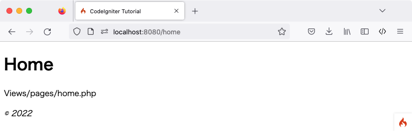

静态页面
备注
本教程假设你已经下载了 CodeIgniter 并在开发环境中 安装了框架。
首先，你需要设置路由规则来处理静态页面。
设置路由规则
路由将 URI 关联到控制器的方法。控制器只是一个帮助委派工作的类。我们稍后将创建一个控制器。
让我们设置路由规则。打开位于 app/Config/Routes.php 的路由文件。
开始时，唯一的路由指令应该是：
<?php
use CodeIgniter\Router\RouteCollection;
/**
* @var RouteCollection $routes
*/
$routes->get('/', 'Home::index');
该指令表示任何没有指定内容的传入请求应由 Home 控制器内的 index() 方法处理。
在 '/' 的路由指令之后，添加以下行。
use App\Controllers\Pages;
$routes->get('pages', [Pages::class, 'index']);
$routes->get('(:segment)', [Pages::class, 'view']);
CodeIgniter 从上到下读取其路由规则，并将请求路由到第一个匹配的规则。每个规则都是一个正则表达式（左侧），映射到一个控制器和方法名称（右侧）。当请求到达时，CodeIgniter 查找第一个匹配项，并调用适当的控制器和方法，可能带有参数。
有关路由的更多信息，请参阅 URI 路由。
在这里，$routes 对象中的第二个规则匹配到一个 GET 请求，URI 路径为 /pages，并映射到 Pages 类的 index() 方法。
$routes 对象中的第三个规则匹配到一个 GET 请求，使用占位符 (:segment)，并将参数传递给 Pages 类的 view() 方法。
让我们制作第一个控制器
接下来，你需要设置一个 控制器 来处理静态页面。控制器只是一个帮助委派工作的类，它是你的 Web 应用程序的粘合剂。
创建 Pages 控制器
在 app/Controllers/Pages.php 中创建一个带以下代码的文件。
重要
你应该始终注意文件名的大小写。许多开发人员在 Windows 或 macOS 上的大小写不敏感的文件系统上开发。 然而,大多数服务器环境使用大小写敏感的文件系统。如果文件名大小写不正确,本地工作的代码将无法在服务器上工作。
<?php
namespace App\Controllers;
class Pages extends BaseController
{
public function index()
{
return view('welcome_message');
}
public function view(string $page = 'home')
{
// ...
}
}
你创建了一个名为 Pages 的类,它有一个名为 view() 的方法,该方法接受一个名为 $page 的参数。它还有一个 index() 方法,与 app/Controllers/Home.php 中的默认控制器相同;该方法显示 CodeIgniter 欢迎页面。
备注
本教程中提到了两个 view() 函数。
一个是使用 public function view($page = 'home') 和 return view('welcome_message') 显示视图而创建的类方法。
从技术上讲,两者都是一个函数。但是当你在一个类中创建一个函数时,它被称为方法。
Pages 类正在扩展 BaseController 类,后者扩展了 CodeIgniter\Controller 类。这意味着新的 Pages 类可以访问在 CodeIgniter\Controller 类中定义的方法和属性(system/Controller.php)。
控制器将成为你的 Web 应用程序的每个请求的中心。与任何 PHP 类一样,你可以在控制器中通过 $this 来引用它。
创建视图
既然你已经创建了第一个方法,是时候制作一些基本的页面模板了。我们将创建两个“视图”(页面模板)作为我们的页面页脚和页眉。
在 app/Views/templates/header.php 中创建页眉,并添加以下代码:
<!doctype html>
<html>
<head>
<title>CodeIgniter 教程</title>
</head>
<body>
<h1><?= esc($title) ?></h1>
页眉包含在加载主视图之前要显示的基本 HTML 代码,以及一个标题。它还将输出 $title 变量,我们将在控制器中定义它。
现在,在 app/Views/templates/footer.php 中创建一个页脚,其中包含以下代码:
<em>© 2022</em>
</body>
</html>
向控制器添加逻辑
创建 home.php 和 about.php
早些时候,你设置了一个带有 view() 方法的控制器。该方法接受一个参数,即要加载的页面的名称。
静态页面正文将位于 app/Views/pages 目录中。
在该目录中,创建两个名为 home.php 和 about.php 的文件。在这些文件中输入一些文本(任何你想要的),然后保存它们。如果你想特别原创,可以试试“Hello World!”。
完成 Pages::view() 方法
为了加载这些页面,你将不得不检查请求的页面是否确实存在。这将是在上面创建的 Pages 控制器中的 view() 方法的主体:
<?php
namespace App\Controllers;
// Add this line to import the class.
use CodeIgniter\Exceptions\PageNotFoundException;
class Pages extends BaseController
{
// ...
public function view(string $page = 'home')
{
if (! is_file(APPPATH . 'Views/pages/' . $page . '.php')) {
// Whoops, we don't have a page for that!
throw new PageNotFoundException($page);
}
$data['title'] = ucfirst($page); // Capitalize the first letter
return view('templates/header', $data)
. view('pages/' . $page)
. view('templates/footer');
}
}
并在 namespace 行后添加 use CodeIgniter\Exceptions\PageNotFoundException; 来导入 PageNotFoundException 类。
现在,当请求的页面确实存在时,它将被加载,包括页眉和页脚,并返回给用户。如果控制器返回一个字符串,它将显示给用户。
备注
控制器必须返回一个字符串或 Response 对象。
如果请求的页面不存在,将显示“404 页面未找到”错误。
此方法的第一行检查页面是否实际存在。PHP 原生的 is_file() 函数用于检查文件是否在预期的位置。PageNotFoundException 是一个 CodeIgniter 异常，它会导致显示 404 页面未找到错误页面。
在页眉模板中,使用 $title 变量来自定义页面标题。此方法中定义了 title 的值,但不是将值赋给变量,而是将其赋给 $data 数组中的 title 元素。
最后要做的就是以它们应显示的顺序加载视图。将使用 CodeIgniter 中内置的 view() 函数来完成此操作。view() 函数中的第二个参数用于向视图传递值。$data 数组中的每个值都分配给一个其键的名称的变量。所以控制器中的 $data['title'] 的值在视图中等效于 $title。
运行应用程序
准备测试了吗?你不能使用 PHP 的内置服务器运行应用程序,因为它不会正确处理 public 中提供的 .htaccess 规则,这些规则消除了在 URL 中指定 “index.php/” 的需要。不过 CodeIgniter 有自己的命令可以使用。
在项目的根目录下,在命令行中:
php spark serve
将启动一个网页服务器,可以在 8080 端口上访问。如果你将浏览器的 location 字段设置为 localhost:8080,则应该会看到 CodeIgniter 欢迎页面。
现在访问 localhost:8080/home。是否正确路由到 Pages 控制器中的 view() 方法?太棒了!
你应该看到类似以下内容:
你现在可以在浏览器的地址栏中尝试多个 URL,以查看上面制作的 Pages 控制器生成的内容…
URL |
将显示 |
|---|---|
localhost:8080/ |
CodeIgniter “欢迎”页面。来自 |
localhost:8080/pages |
来自我们的 |
localhost:8080/home |
因为我们明确请求了上面创建的 “home” 页面，
所以结果来自我们 |
localhost:8080/about |
显示上面制作的“关于”页面,因为我们明确要求它。 |
localhost:8080/shop |
一个“404 - 文件未找到”错误页面,因为没有 app/Views/pages/shop.php。 |